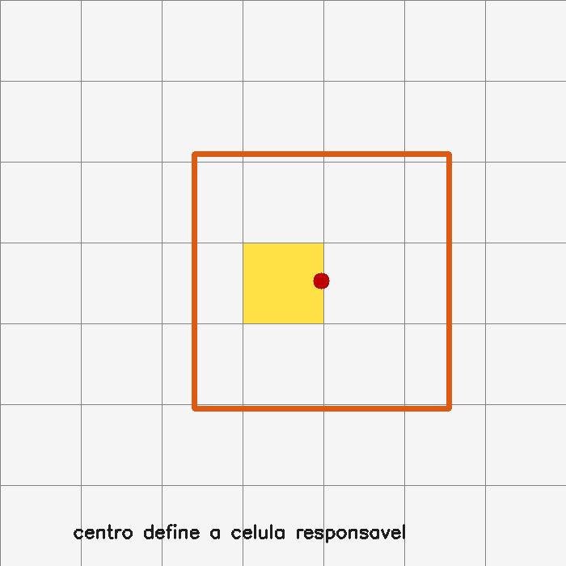

18. YOLO moderno e inferência prática¶
O que você aprenderá¶
Neste capítulo final, você integrará vários conceitos anteriores em um pipeline moderno de detecção: preparação da imagem, responsabilidade espacial, múltiplas escalas, coordenadas, letterbox, inferência, resultados, métricas e desempenho.
Ao final, deverá conseguir:
- compreender a ideia histórica de responsabilidade espacial do YOLO;
- reconhecer que implementações modernas diferem das versões iniciais;
- explicar por que detectores usam múltiplas escalas;
- compreender letterbox;
- calcular escala e padding;
- converter caixas entre espaço original e espaço preparado;
- interpretar coordenadas
xyxyexywh; - compreender confiança e classe;
- interpretar objetos
Resultsem alto nível; - compreender IoU, NMS e avaliação como parte do pipeline;
- diferenciar precisão e revocação;
- compreender AP e mAP;
- diferenciar latência e throughput;
- planejar benchmarks reproduzíveis;
- comparar modelos pelo compromisso entre qualidade e custo.
YOLO foi originalmente apresentado como detector unificado de uma etapa (REDMON et al., 2016). A família evoluiu profundamente; por isso, este capítulo separa conceitos duradouros de detalhes específicos de uma versão.
18.1 O que permanece da ideia YOLO?¶
A ideia didática central é evitar uma busca independente por milhares de recortes. Uma rede compartilha computação sobre a imagem e produz previsões densas de objetos.
Analogia: fiscal olhando a praça inteira¶
Em vez de fotografar cada metro quadrado da praça separadamente e perguntar “há alguém aqui?”, o fiscal observa a cena inteira e aponta posições onde acredita existirem objetos.
18.2 A explicação clássica da grade¶
Nas primeiras formulações, uma grade dividia a imagem e a célula que continha o centro do objeto assumia responsabilidade por ele (REDMON et al., 2016).

Essa ideia continua útil para compreender a relação entre mapas de features e posições espaciais.
Modelo didático não é descrição literal de toda versão moderna
Detectores atuais podem usar atribuição dinâmica, estratégias anchor-free, diferentes cabeças e múltiplas escalas. Sempre consulte a arquitetura específica do modelo utilizado.
18.3 Centro do objeto e célula responsável¶
Se uma grade é 7 × 7 e a imagem mede 700 × 700, cada célula didática mede 100 × 100.
Um centro em:
pertence aproximadamente à:
considerando índice iniciado em zero.
Exemplo 1¶
18.4 Objetos pequenos são difíceis¶
Um objeto pequeno pode ocupar poucos pixels e desaparecer progressivamente em mapas de baixa resolução.
Por isso, detectores modernos combinam representações de diferentes escalas.
18.5 Cabeças multiescala¶
Mapas de alta resolução:
- preservam detalhes espaciais;
- ajudam objetos pequenos.
Mapas profundos de menor resolução:
- possuem contexto semântico maior;
- ajudam objetos grandes e padrões complexos.
Analogia: mapas da cidade¶
Um mapa de bairro mostra ruas pequenas; um mapa estadual mostra contexto amplo. Um detector combina escalas para enxergar detalhes e contexto.
18.6 O problema de redimensionar para quadrado¶
Imagem original:
Entrada do modelo:
Se simplesmente fizermos:
os objetos serão deformados.
18.7 Letterbox¶
Letterbox preserva proporção e adiciona padding.
Passo 1 — escala¶
Passo 2 — tamanho redimensionado¶
Passo 3 — padding¶
18.8 Exemplo numérico de letterbox¶
Original:
Alvo:
Escala:
Novo tamanho:
Padding vertical total:
aproximadamente 140 pixels acima e 140 abaixo.
18.9 Implementação didática de letterbox¶
def letterbox(imagem, alvo=(640, 640)):
h, w = imagem.shape[:2]
alvo_w, alvo_h = alvo
escala = min(alvo_w / w, alvo_h / h)
novo_w = int(round(w * escala))
novo_h = int(round(h * escala))
red = cv2.resize(
imagem,
(novo_w, novo_h),
interpolation=cv2.INTER_LINEAR
)
esquerda = (alvo_w - novo_w) // 2
direita = alvo_w - novo_w - esquerda
topo = (alvo_h - novo_h) // 2
baixo = alvo_h - novo_h - topo
saida = cv2.copyMakeBorder(
red,
topo,
baixo,
esquerda,
direita,
cv2.BORDER_CONSTANT,
value=(114, 114, 114)
)
return saida, escala, esquerda, topo
18.10 Caixas pertencem ao espaço em que foram previstas¶
Se uma rede prevê uma caixa no espaço letterbox, ela não pode ser desenhada diretamente na imagem original.
Precisamos remover padding e desfazer escala.
18.11 Invertendo letterbox¶
Para coordenadas x:
Para y:
Exemplo 2¶
def desfazer_letterbox(
caixa,
escala,
pad_x,
pad_y
):
x1, y1, x2, y2 = caixa
x1 = (x1 - pad_x) / escala
x2 = (x2 - pad_x) / escala
y1 = (y1 - pad_y) / escala
y2 = (y2 - pad_y) / escala
return x1, y1, x2, y2
Depois aplique clipping aos limites da imagem.
18.12 Formatos comuns de caixa¶
xyxy¶
xywh¶
ou, em algumas APIs, topo esquerdo + largura/altura.
O nome sozinho pode não ser suficiente
Confirme sempre a documentação da biblioteca. Convenções de xywh podem variar.
18.13 Inferência com biblioteca de alto nível¶
Um exemplo conceitual com Ultralytics pode ser:
Versões, nomes de modelos e APIs evoluem. Consulte a documentação correspondente à versão instalada.
18.14 Objeto de resultados¶
Bibliotecas de alto nível normalmente agrupam:
- caixas;
- classes;
- confianças;
- imagem original;
- metadados de transformação;
- resultados adicionais conforme a tarefa.
Uma aplicação não deve depender de atributos não documentados sem testes de versão.
18.15 Transferência GPU → CPU¶
Tensores podem estar na GPU.
Converter repetidamente:
pode gerar overhead.
Converta apenas quando necessário para integração com código NumPy/OpenCV.
18.16 Confiança mínima¶
Limiar baixo:
- mais detecções;
- maior revocação potencial;
- mais falsos positivos.
Limiar alto:
- menos detecções;
- maior seletividade;
- pode perder objetos.
Avalie no seu conjunto, não em uma única fotografia.
18.17 IoU e NMS continuam relevantes¶
Mesmo que uma biblioteca encapsule o pós-processamento, os conceitos do capítulo 11 permanecem.
Você precisa compreender:
- quando caixas são consideradas duplicatas;
- se NMS é por classe;
- quais limiares foram usados;
- como resultados mudam ao alterar configuração.
18.18 Precisão¶
Pergunta:
“Entre as detecções produzidas, quantas estavam corretas?”
Alta precisão significa poucos falsos positivos entre as previsões.
18.19 Revocação¶
Pergunta:
“Entre os objetos reais, quantos foram encontrados?”
Alta revocação significa poucos objetos perdidos.
18.20 Compromisso precisão–revocação¶
Reduzir o limiar de confiança tende a aumentar a quantidade de detecções.
Isso pode:
- aumentar revocação;
- reduzir precisão.
A curva precisão–revocação analisa esse compromisso em vários limiares.
18.21 AP¶
Average Precision resume o desempenho de uma classe ao longo da curva precisão–revocação sob determinado critério de IoU.
Não interprete AP como “porcentagem simples de acertos”. É uma métrica agregada sobre diferentes limiares de confiança.
18.22 mAP¶
Mean Average Precision calcula média das APs entre classes e, conforme o protocolo, entre limiares de IoU.
Ao comparar resultados, informe o protocolo completo.
Exemplos diferentes de mAP podem não ser diretamente comparáveis se usarem critérios diferentes.
18.23 Latência versus throughput¶
Latência¶
Tempo para processar uma entrada.
Throughput¶
Quantidade processada por unidade de tempo.
Batch maior pode aumentar throughput e, ao mesmo tempo, aumentar latência individual.
18.24 FPS não é comparação suficiente¶
Ao comparar dois detectores, registre:
- hardware;
- CPU/GPU;
- versão da biblioteca;
- precisão numérica;
- tamanho da entrada;
- batch;
- aquecimento;
- pré-processamento incluído ou não;
- pós-processamento incluído ou não.
Sem isso, “120 FPS” tem pouco valor científico.
18.25 Benchmark reproduzível¶
import time
import numpy as np
tempos = []
for i in range(30):
inicio = time.perf_counter()
# inferência
duracao = time.perf_counter() - inicio
if i >= 5: # descarta aquecimento
tempos.append(duracao)
print("mediana ms:", np.median(tempos) * 1000)
Meça em várias entradas representativas.
18.26 Modelo maior não é automaticamente melhor¶
Um modelo maior pode melhorar alguma métrica, mas exigir:
- mais memória;
- maior latência;
- mais energia;
- hardware mais caro.
O melhor modelo é aquele que satisfaz as restrições reais da aplicação.
Analogia: caminhão e motocicleta¶
Um caminhão carrega mais, mas não é melhor veículo para toda tarefa. A escolha depende da carga, estrada, velocidade e custo.
18.27 Objetos pequenos e resolução de entrada¶
Aumentar a resolução pode tornar objetos pequenos mais visíveis ao detector.
Mas aumenta:
- memória;
- operações;
- latência.
Teste a relação entre ganho de AP/recall e custo.
18.28 Inferência em vídeo¶
Em vídeo, também entram questões temporais:
- decodificação;
- fila de frames;
- atraso acumulado;
- batch/streaming;
- tracking entre frames.
Um detector rápido isoladamente pode não garantir pipeline em tempo real se captura e renderização forem gargalos.
18.29 Exemplo integrado do capítulo¶
O código do capítulo 18 possui uma parte autocontida e uma parte opcional com modelo real.
Execução sem rede:
Inferência opcional:
python -m pip install -e ".[yolo]"
python -m exemplos.cap18_yolo_moderno \
--imagem caminho/rua.jpg \
--modelo yolov8n.pt
O primeiro uso de alguns modelos pode depender de pesos externos. Verifique origem, licença e políticas de rede do ambiente.
Pipeline didático:
imagem
↓
grade/centro didático
↓
letterbox
↓
escala + padding
↓
caixa em espaço preparado
↓
transformação inversa
↓
IoU
↓
inferência opcional
↓
resultados
↓
benchmark
18.30 Erros comuns¶
| Sintoma | Causa provável | Correção |
|---|---|---|
| caixas deslocadas | padding não removido | reverta letterbox |
| objetos achatados | resize direto | preserve proporção |
xywh interpretado errado |
convenção diferente | consulte API |
| benchmark inconsistente | sem aquecimento/protocolo | padronize medição |
| FPS alto e resultado ruim | resolução/modelo pequeno | avalie qualidade + custo |
| mAP comparado incorretamente | protocolos diferentes | informe IoU/classes/dataset |
| memória alta | resolução/batch/modelo | ajuste compromisso |
| vídeo atrasa | pipeline total > orçamento | medir captura+inferência+saída |
18.31 Perguntas de revisão¶
- Para que serve a explicação de grade no YOLO clássico?
- Por que ela não descreve literalmente todo detector moderno?
- Por que múltiplas escalas ajudam objetos pequenos?
- O que é letterbox?
- Como desfazer a transformação de uma coordenada?
- Qual diferença entre precisão e revocação?
- O que AP resume?
- O que mAP agrega?
- Qual diferença entre latência e throughput?
- Por que comparar somente FPS é inadequado?
Exercícios de fixação¶
Exercício 1¶
Para imagem 1280×720 e alvo 640×640, calcule escala e padding do letterbox.
Exercício 2¶
Faça o mesmo para imagem 480×800.
Exercício 3¶
Implemente letterbox() e confirme o tamanho final.
Exercício 4¶
Crie uma caixa na imagem original, transforme-a para o espaço letterbox e depois reverta. Compare o erro numérico.
Exercício 5¶
Implemente clipping após desfazer letterbox.
Exercício 6¶
Calcule precisão para TP=80, FP=20.
Exercício 7¶
Calcule revocação para TP=80, FN=40.
Exercício 8¶
Explique como diminuir o limiar de confiança pode afetar ambas.
Exercício 9¶
Meça latência mediana de uma função após cinco execuções de aquecimento.
Exercício 10¶
Compare throughput com batch 1 e batch maior em um ambiente que suporte execução em lote.
Exercício 11¶
Execute, quando disponível, modelos de dois tamanhos sobre o mesmo conjunto e registre latência e número de detecções.
Exercício 12¶
Teste duas resoluções de entrada em objetos pequenos e compare resultados.
Exercício 13¶
Crie uma ficha de benchmark contendo hardware, software, tamanho, batch, limiar, NMS e métrica.
Exercício 14¶
Escreva uma recomendação técnica para escolher entre modelo rápido e modelo mais preciso em uma aplicação embarcada.
Síntese do curso¶
O capítulo final reúne várias ideias construídas ao longo do material: imagem como matriz, transformação geométrica, filtros, máscaras, contornos, características, redes, caixas, IoU e inferência. Um detector moderno encapsula muita complexidade, mas continua sujeito às mesmas perguntas fundamentais: qual é o sistema de coordenadas, como os dados foram preparados, como a saída é interpretada, como os erros são medidos e quais restrições a aplicação possui?
Dominar essas perguntas é mais importante do que decorar uma chamada de biblioteca.
Referências¶
REDMON, Joseph et al. You Only Look Once: Unified, Real-Time Object Detection. In: IEEE Conference on Computer Vision and Pattern Recognition. 2016.
SZELISKI, Richard. Computer Vision: Algorithms and Applications. 2. ed. Cham: Springer, 2022.